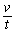
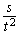
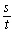
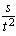

Der Fall ist die relativ-freie Bewegung, frei, indem sie durch den Begriff des Körpers gesetzt, die Erscheinung seiner eigenen Schwere ist; sie ist ihm daher immanent. Aber sie ist zugleich als die nur erste Negation der Äußerlichkeit bedingt; die Entfernung von dem Zusammenhange mit dem Zentrum ist daher noch die äußerlich gesetzte, zufällige Bestimmung.
Die Gesetze der Bewegung betreffen die Größe, und zwar wesentlich der verflossenen Zeit und des in derselben durchlaufenen Raums; es sind unsterbliche Entdeckungen, die der Analyse des Verstandes die höchste Ehre machen. Ein Weiteres ist der nicht empirische Beweis derselben, und auch dieser ist von der mathematischen Mechanik gegeben worden, so daß auch die auf Empirisches sich gründende Wissenschaft mit dem bloß empirischen Weisen (Monstrieren) nicht zufrieden ist. Die Voraussetzung bei diesem apriorischen Beweise ist, daß die Geschwindigkeit im Fall gleichförmig beschleunigt ist; der Beweis aber besteht in der Verwandlung der Momente der mathematischen Formel in physikalische Kräfte, in eine beschleunigende Kraft, welche in jedem Zeitmoment einen (denselben) Impuls mache58) , und in eine Kraft der Trägheit, welche die in jedem Zeitmomente erlangte (größere) Geschwindigkeit fortsetze, - Bestimmungen, die durchaus ohne empirische Beglaubigung sind, so wie der Begriff nichts mit ihnen zu tun hat. Näher wird die Größenbestimmung, welche hier ein Potenzenverhältnis enthält, auf die Gestalt einer Summe zweier voneinander unabhängiger Elemente gebracht und damit die qualitative, mit dem Begriffe zusammenhängende Bestimmung getötet. Zu einer Folge aus dem so bewiesen sein sollenden Gesetze wird gemacht, daß in der gleichförmig beschleunigten Bewegung die Geschwindigkeiten den Zeiten proportional seien. In der Tat ist dieser Satz aber nichts als die ganz einfache Definition der gleichförmig beschleunigten Bewegung selbst. Die schlecht-gleichförmige Bewegung hat die durchlaufenen Räume den Zeiten proportional; die beschleunigte ist [die], in der die Geschwindigkeit in jedem der folgenden Zeitteile größer wird, die gleichförmig beschleunigte Bewegung somit [die], in der die Geschwindigkeiten den verflossenen Zeiten proportional sind; also

v OVER t d. i.
s OVER t SUP 2 . Dies ist der einfache wahrhafte Beweis. - v ist die Geschwindigkeit überhaupt, die noch unbestimmte; so ist sie zugleich die abstrakte, d. i. schlecht-gleichförmige. Die Schwierigkeit, die [bei] jenem Beweisen vorkommt, liegt darin, daß v zunächst als unbestimmte Geschwindigkeit überhaupt in Rede steht, aber sich im mathematischen Ausdruck als
s OVER t , d. i. schlecht-gleichförmige, präsentiert. Jener Umweg des von der mathematischen Exposition hergenommenen Beweisens dient für dies Bedürfnis, die Geschwindigkeit als die schlecht-gleichförmige s OVER t zu nehmen und von ihr zu s OVER { t SUP 2 } überzugehen. In dem Satze, daß die Geschwindigkeit den Zeiten proportional ist, ist die Geschwindigkeit zunächst überhaupt gesagt; so wird sie überflüssigerweise mathematisch als s OVER t, die schlecht-gleichförmige gesetzt, so die Kraft der Trägheit hereingebracht und ihr dies Moment zugeschrieben. Damit aber, daß sie den Zeiten proportional sei, ist sie vielmehr als die gleichförmig beschleunigte
s OVER t SUP 2 bestimmt, und jene Bestimmung von s OVER t hat hier keinen Platz und ist ausgeschlossen.59)Zusatz. Nur das Suchen des Zentrums ist im Fall die absolute Seite; nachher werden wir sehen,
wie das andere Moment, die Diremtion, das Unterscheiden, das Versetzen des Körpers in das Nichtunterstützen,
auch aus dem Begriffe kommt. Im Fall sondert sich die Masse nicht von selbst ab; aber
abgesondert kehrt sie in die Einheit zurück. Die Fallbewegung macht so den Übergang
und steht in der Mitte zwischen der trägen Materie und der Materie, in der ihr Begriff
absolut realisiert ist, oder der absolut freien Bewegung. Während die Masse, als der
bloß quantitative gleichgültige Unterschied, ein Faktor der äußeren Bewegung ist,
so hat hier, wo die Bewegung durch den Begriff der Materie gesetzt ist, der quantitative
Unterschied der Massen als solcher keinen Sinn; sie fallen als Materien überhaupt,
nicht als Massen. Beim Falle kommen die Körper nämlich bloß als schwer in Betracht,
und ein großer ist so schwer als ein kleiner, d. h. einer von geringerem Gewicht.
Wir wissen wohl, eine Flaumfeder fällt nicht wie eine Bleikugel; doch kommt dies vom
Medium her, welches weichen muß, so daß die Massen sich nach der qualitativen Verschiedenheit
des Widerstands verhalten. Ein Stein fällt z. B. schneller in der Luft als im Wasser;
aber im luftleeren Raum fallen die Körper auf gleiche Weise. Galilei hat diesen Satz
aufgestellt und ihn Mönchen vorgetragen; nur ein Pater hat sich in seiner Weise darein gefunden, indem er sagte, Schere und Messer
kämen zugleich zur Erde; so leicht ist es aber nicht, die Sache zu entscheiden. Solche
Erkenntnis ist mehr wert als tausend und abertausend sogenannter glänzender Gedanken.
Die empirische Größe ist, daß der Körper in einer Sekunde etwas über 15 Fuß fällt;
in anderen Breiten tritt jedoch eine kleine Verschiedenheit ein. Fällt der Körper
zwei Sekunden, so hat er nicht das Doppelte, sondern das Vierfache, 60 Fuß durchlaufen:
in drei Sekunden 9 × 15 Fuß usf. Oder ist ein Körper 3 Sekunden, der andere 9 gefallen, so verhalten sich
die durchlaufenen Räume nicht wie 3 : 9, sondern wie 9 : 81. Die schlechthin gleichförmige
Bewegung ist die gemeine mechanische Bewegung; die ungleichförmig beschleunigte Bewegung
ist willkürlich; die gleichförmig beschleunigte Bewegung ist erst gesetzliche, lebendige
Naturbewegung. Also mit der Zeit nimmt die Geschwindigkeit zu; d. i. t : s OVER t d. i. s : t2. Denn s : t2 ist dasselbe als s OVER t SUP 2. In der Mechanik beweist man dies mathematisch, indem man die sogenannte Kraft der
Trägheit durch ein Quadrat und die sogenannte beschleunigende Kraft durch ein daran
gefügtes Dreieck bezeichnet; dies ist von Interesse und vielleicht notwendig für die
mathematische Darstellung; aber es ist nur durch sie und ist eine gequälte Darstellung.
Diese Beweise setzen immer das voraus, was sie beweisen sollen. Man beschreibt dann
wohl, was vorgeht; die Vorstellung der Mathematik geht aus dem Bedürfnis hervor, das Potenzenverhältnis
in ein trätableres zu verwandeln, z. B. auf Addition oder Subtraktion und auf Multiplikation
zurückzuführen; so wird die Fallbewegung in zwei Teile zerlegt. Diese Teilung ist
aber nichts Reales, sondern eine leere Fiktion und nur zum Behufe der mathematischen
Darstellung.
Der Fall ist das nur abstrakte Setzen eines Zentrums, in dessen Einheit der Unterschied der partikularen Massen und Körper sich als aufgehoben setzt; Masse, Gewicht hat daher in der Größe dieser Bewegung keine Bedeutung. Aber das einfache Fürsichsein des Zentrums ist als diese negative Beziehung auf sich selbst wesentlich Repulsion seiner selbst; - formelle Repulsion in die vielen ruhenden Zentra (Sterne); - lebendige Repulsion, als Bestimmung derselben nach den Momenten des Begriffs und wesentliche Beziehung dieser hiernach unterschieden gesetzten Zentra aufeinander. Diese Beziehung ist der Widerspruch ihres selbständigen Fürsichseins und ihres in dem Begriffe Zusammengeschlossenseins; die Erscheinung dieses Widerspruches ihrer Realität und ihrer Identität ist die Bewegung, und zwar die absolut freie Bewegung.
Zusatz. Der Mangel des Gesetzes des Falls liegt sogleich darin, daß wir in dieser Bewegung
den Raum erst in der ersten Potenz auf abstrakte Weise als Linie gesetzt sehen; das
kommt daher, weil die Bewegung des Falls auch eine bedingte Bewegung ist, wie sie
eine freie ist (s. vorh. §). Der Fall ist nur die erste Erscheinung der Schwere, weil
die Bedingung als Entfernung vom Zentrum noch zufällig, nicht durch die Schwere selbst
bestimmt ist. Diese Zufälligkeit hat noch hinwegzufallen. Der Begriff muß der Materie
ganz immanent werden; das ist das dritte Hauptstück, die absolute Mechanik, die vollkommen
freie Materie, die in ihrem Dasein ihrem Begriffe vollkommen angemessen ist. Die träge
Materie ist ihrem Begriffe ganz unangemessen. Die schwere Materie als fallend ist
ihrem Begriffe nur teilweise angemessen, nämlich durch das Aufheben der Vielheit,
als das Streben der Materie nach einem Ort als Mittelpunkt. Aber das andere Moment, das Differentsein des Orts in sich selbst,
ist noch nicht durch den Begriff gesetzt; oder es fehlt dies, daß die attrahierte
Materie sich als schwere noch nicht repelliert hat, die Diremtion in viele Körper noch nicht
das Tun der Schwere selbst ist. Solche Materie, die als Viele ausgedehnt und zugleich
in sich kontinuierlich ist, den Mittelpunkt in sich hat, - diese muß repelliert werden;
das ist die reale Repulsion, wo das Zentrum dies ist, sich selbst zu repellieren,
zu vervielfältigen, die Massen also als viele gesetzt sind, jede mit ihrem Zentrum.
Das logische Eins ist unendliche Beziehung auf sich selbst, welche Identität mit sich,
aber als sich auf sich beziehende Negativität, somit Abstoßen von sich selbst ist;
das ist das andere im Begriffe enthaltene Moment. Zur Realität der Materie gehört,
daß sie sich setze in den Bestimmungen ihrer Momente. Der Fall ist das einseitige
Setzen der Materie als Attraktion; das Weitere ist, daß sie nun auch als Repulsion
erscheine. Die formale Repulsion hat auch ihr Recht; denn die Natur ist eben dies,
ein abstraktes vereinzeltes Moment für sich bestehen zu lassen. Solches Dasein der
formellen Repulsion sind die Sterne, als noch ununterschieden, überhaupt viele Körper,
die hier aber noch nicht als leuchtend in Betracht kommen, was eine physikalische
Bestimmung ist.
Wir können meinen, es sei Verstand im Verhalten der Sterne zueinander; sie gehören
aber der toten Repulsion an. Ihre Figurationen können Ausdruck wesentlicher Verhältnisse sein; sie gehören aber nicht der lebendigen
Materie an, wo der Mittelpunkt sich in sich unterscheidet. Das Heer der Sterne ist
eine formelle Welt, weil nur jene einseitige Bestimmung geltend gemacht ist. Dies
System müssen wir durchaus nicht dem Sonnensystem gleichstellen, welches erst das
System realer Vernünftigkeit ist, was wir am Himmel erkennen können. Man kann die
Sterne wegen ihrer Ruhe verehren; an Würde sind sie aber dem konkreten Individuellen
nicht gleichzusetzen. Die Erfüllung des Raums schlägt in unendlich viele Materien
aus; das ist aber nur das erste Ausschlagen, das den Anblick ergötzen kann. Dieser
Licht-Ausschlag ist so wenig bewundernswürdig als einer am Menschen oder als die Menge
von Fliegen. Die Stille dieser Sterne interessiert das Gemüt näher, die Leidenschaften
besänftigen sich beim Anschauen dieser Ruhe und Einfachheit. Diese Welt hat aber auf
dem philosophischen Standpunkt nicht das Interesse, das sie für die Empfindung hat.
Daß sie in unermeßlichen Räumen als Vielheit ist, sagt für die Vernunft gar nichts;
das ist das Äußerliche, Leere, die negative Unendlichkeit. Darüber weiß sich die Vernunft
erhoben; es ist dies eine bloße negative Bewunderung, ein Erheben, das in seiner Beschränktheit
steckenbleibt. Das Vernünftige in Ansehung der Sterne ist, die Figurationen zu fassen,
in denen sie gegeneinander gestellt sind. Das Ausschlagen des Raumes in abstrakte
Materie geht selbst nach einem inneren Gesetze, daß die Sterne Kristallisationen vorstellten,
die eine innere Verbindung hätten. Die Neugierde, wie es da aussieht, ist ein leeres
Interesse. Über die Notwendigkeit dieser Figurationen ist nun nicht viel zu sagen.
Herschel60) hat in Nebelflecken Formen gesehen, die auf Regelmäßigkeit hindeuten. Die Räume,
die von der Milchstraße entfernter sind, sind leerer; so ist man darauf gekommen (Herschel
und Kant), daß die Sterne die Figur einer Linse bilden. Das ist etwas ganz Unbestimmtes,
Allgemeines. Die Würde der Wissenschaft muß man nicht darin setzen, daß alle mannigfaltigen
Gestaltungen begriffen, erklärt seien; sondern man muß sich mit dem begnügen, was
man in der Tat bis jetzt begreifen kann. Es gibt vieles, was noch nicht zu begreifen
ist; das muß man in der Naturphilosophie zugestehen. Das vernünftige Interesse bei
den Sternen kann sich jetzt nur in der Geometrie derselben zeigen; die Sterne sind
das Feld dieser abstrakten unendlichen Diremtion, worin das Zufällige einen wesentlichen
Einfluß auf die Zusammenstellung hat.
58) *Es ließe sich sagen, daß diese sogenannte beschleunigende Kraft ihren Namen sehr uneigentlich führe, da die von ihr herrühren sollende Wirkung in jedem Zeitmomente gleich (konstant) ist, - der empirische Faktor in der Größe des Falls, die Einheit (die 15 Fuß an der Oberfläche der Erde). Die Beschleunigung besteht allein in dem Hinzusetzen dieser empirischen Einheit in jedem Zeitmoment. Der sogenannten Kraft der Trägheit dagegen kommt wenigstens auf dieselbe Weise die Beschleunigung zu, denn es wird ihr zugeschrieben, daß ihre Wirkung die Dauer der am Ende jedes Zeitmoments erlangten Geschwindigkeit sei, d. i. daß sie ihrerseits diese Geschwindigkeit zu jener empirischen Größe hinzufüge; und zwar sei diese Geschwindigkeit am Ende jedes Zeitmoments größer als am Ende des vorhergehenden.
59) *Lagrange geht nach seiner Weise in der Théorie des fonctions [analytiques, Paris 1797], 3me partie, "Application de la Théorie à la Mécanique", Ch. I, den einfachen, ganz richtigen Weg; er setzt die mathematische Behandlung der Funktionen voraus und findet nun in der Anwendung auf die Mechanik, für s = ft, in der Natur ft auch bt2; s = ct3 präsentiere sich in der Natur nicht. Hier ist mit Recht keine Rede davon, einen Beweis von s = bt2 aufstellen zu wollen, sondern dies Verhältnis wird als in der Natur sich findend aufgenommen. Bei der Entwicklung der Funktion, indem t zu t+ϑ werde, wird der Umstand, daß von der sich für den in ϑ durchlaufenen Raum ergebenden Reihe nur die zwei ersten Glieder gebraucht werden können und die anderen wegzulassen seien, auf seine gewöhnliche Weise für das analytische Interesse erledigt. Aber jene zwei ersten Glieder werden für das Interesse des Gegenstandes nur gebraucht, weil nur sie eine reelle Bestimmung haben (ibid. 4, 5: "on voit que les fonctions primes et secondes se présentent naturellement dans la mécanique où elles ont une valeur et une signification déterminées" ["man sieht also, daß die erste und zweite Ableitung von selbst in der Mathematik erscheinen, wo sie bestimmte Werte und Bedeutungen haben"]). Von hier fällt Lagrange wohl auf die Newtonschen Ausdrücke von der abstrakten, d. i. schlecht-gleichförmigen Geschwindigkeit, die der Kraft der Trägheit anheimfällt, und auf die beschleunigende Kraft, womit auch die Erdichtungen der Reflexion von einem unendlich kleinen Zeitraum (dem ϑ), dessen Anfang und Ende hereinkommen. Aber dies hat keinen Einfluß auf jenen richtigen Gang, der diese Bestimmungen nicht für einen Beweis des Gesetzes gebrauchen will sondern dieses, wie hier gehörig, aus der Erfahrung aufnimmt und dann die mathematische Behandlung darauf anwendet.
60) Friedrich Wilhelm Herschel, 1738-1822, Astronom, entdeckte 1781 den Uranus